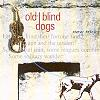

Celtic Lyrics Corner > Artists & Groups > Old Blind Dogs > New Tricks > Song For Autumn
|  | Song For Autumn |
| Credits : | Robert Burns; arranged by Old Blind Dogs |
| Appears On : | New Tricks |
| Language : | English |
| Other Versions : |
"
Westlin' Winds
" on Anam's album Riptide
" Westlin' Winds " on Tannahill Weavers' album Epona |
Lyrics :
Now westlin' wind aye and slaught'ring gun
Bring autumn's pleasant weather
Oh the gorcock springs aye on whirring wings
Amangst the blooming heather
Now waving grain wide o'er the plain
Delights the weary farmer
But the moon shines bright when I rove at night
To muse upon my charmer
Now the partridge loves a fruitful fell
The plover loves the mountains
And the woodcock haunts the lonely dell
The soaring hern the fountains
Through lofty groves the cushat roves
The path of man to shun it
And the hazel bush o'erhangs the thrush
The spreading thorn, the linnet
Let every kind their fortune find
The savage and the tender
Some social join, oh some leagues combine
Some solitary wander
Avaunt, away, the cruel sway
Tyrannic man's dominion
The sportsman's joy, oh a murdering cry
Fluttering gory pinion
But, Peggy dear, evening's clear
Swift flies the skimming swallow
Oh the sky is blue, all the fields in view
All shimmering green and yellow
Come, let us stray our gladsome way
And view the charms of nature
The rustling corn, oh the fruited thorn
And every happy creature
We'll gently walk, aye we'll sweetly talk
'Til the silent moon shines clearly
I'll grasp thy waist, oh I'll fondly press
Oh I swear I love you dearly
No vernal showers to budding flowers
Not autumn to the farmer
So dear can be aye as thou to me
My fair, my lovely charmer
No vernal showers to budding flowers
Not autumn to the farmer
So dear can be aye as thou to me
My fair, my lovely charmer